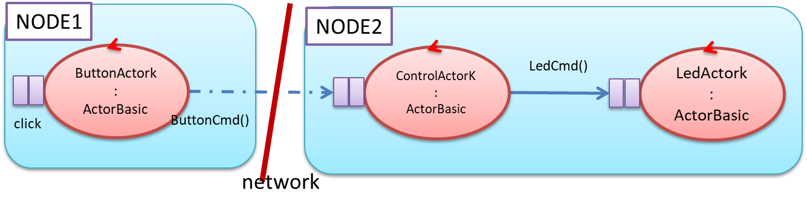

72939 - LAB6 | Towards distributed systems
LabSS-lectures site
WORKPLAN (REQUIREMENTS)
- BLSDSingle: Design and build a Distributed software system with one Button and one Led.
- BLSDChain: Design and build a Distributed software system with one Button and a
chain of Led made of n>2:
LedSegment.kt.
- BLSD7Segm: Design and build a Distributed software system that updates a 7-segment display.
BLSDSingle
Our starting point is the system of
Lab5.html

Problem analysis
- Since there are 3 components, how many computational nodes are appropriate: two or three?
- In order to reduce costs, the customer has fixed to 2 the number of computational nodes. Now the problem is: which node
is more appropriate for the Control: the node of the Button or the node of the Led?
If we want to minimize network traffic, it is more appropriate to put Control and Led on the same node.

- Do we have appropriate technology for implementing exchange of information among different computational nodes? Of course, the answer
is positive, with many possible choices, mainly related to the usage of communication protocols:
Now the problem is about the possibility to design and build our software system, so to minimize the impact of changes in the case we want
to change the communication protocol.
- The proxy design pattern cna be taken as a reference point
for the required modifications in our system architecture:
CODE